S16-creatures · Encyclopedia Bestiary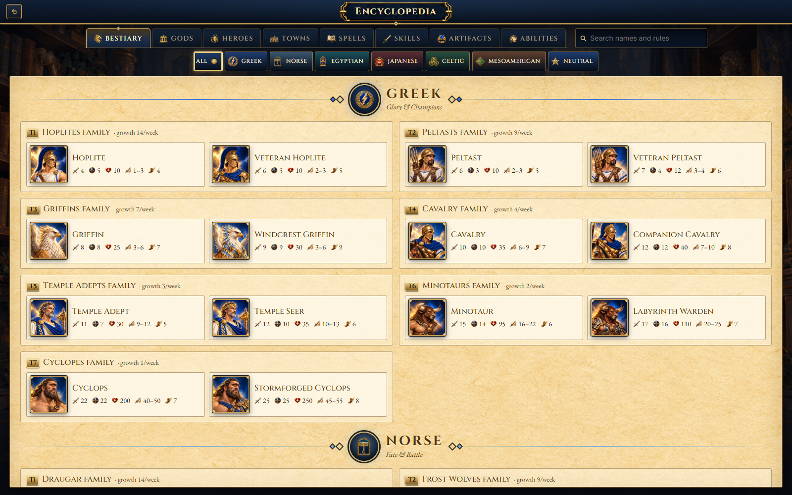
S16-gods · Encyclopedia Gods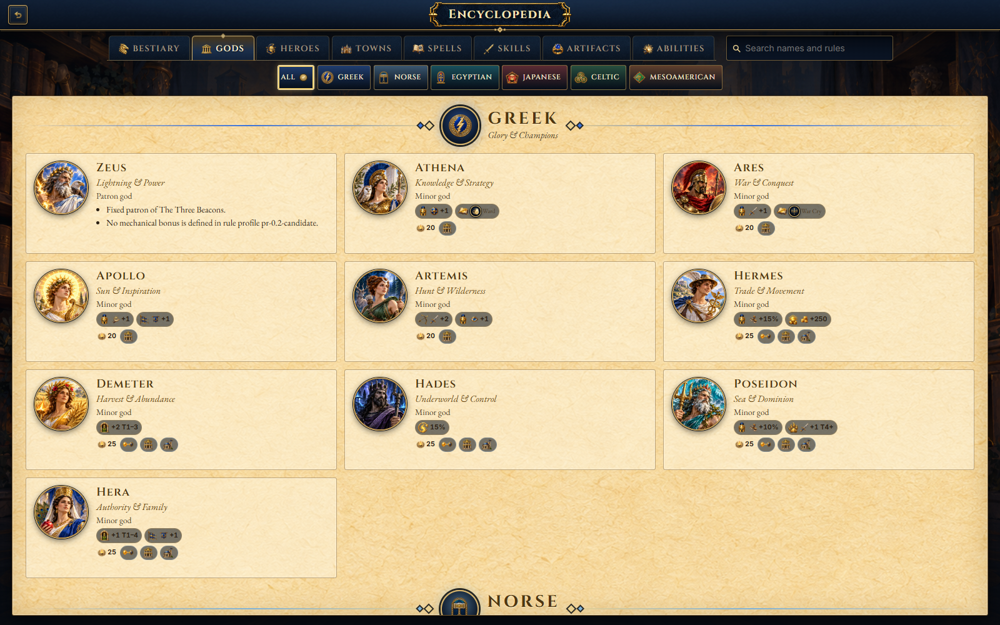
S16-heroes · Encyclopedia Heroes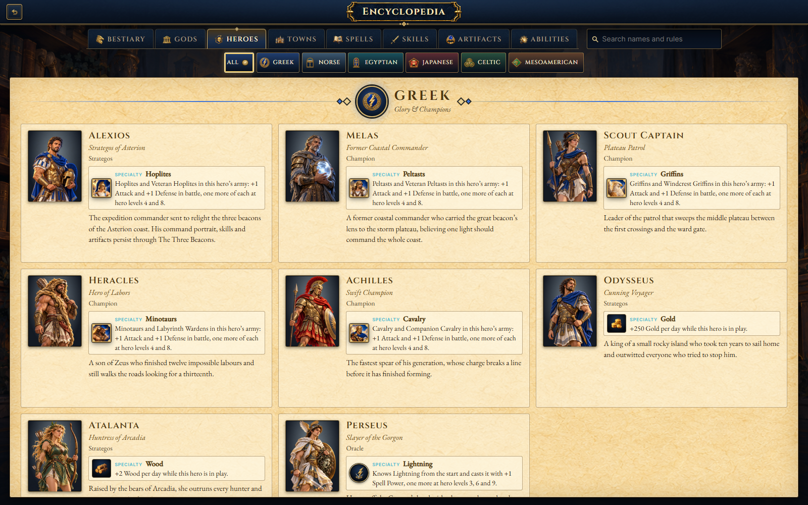
S16-skills · Encyclopedia Skills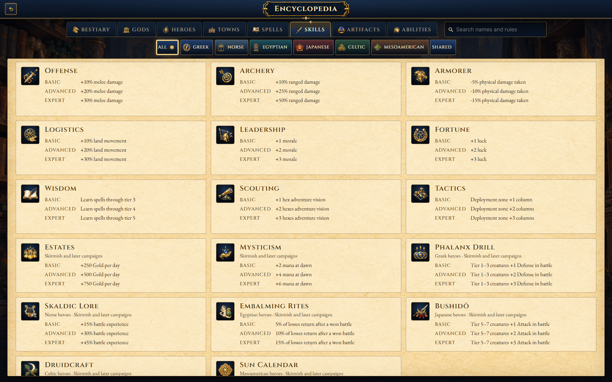
S16-spells · Encyclopedia Spells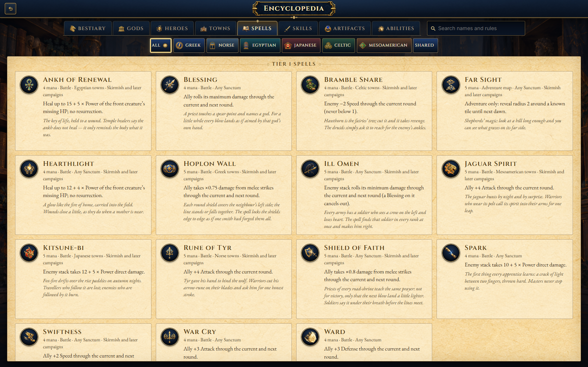
S16-town · Encyclopedia Towns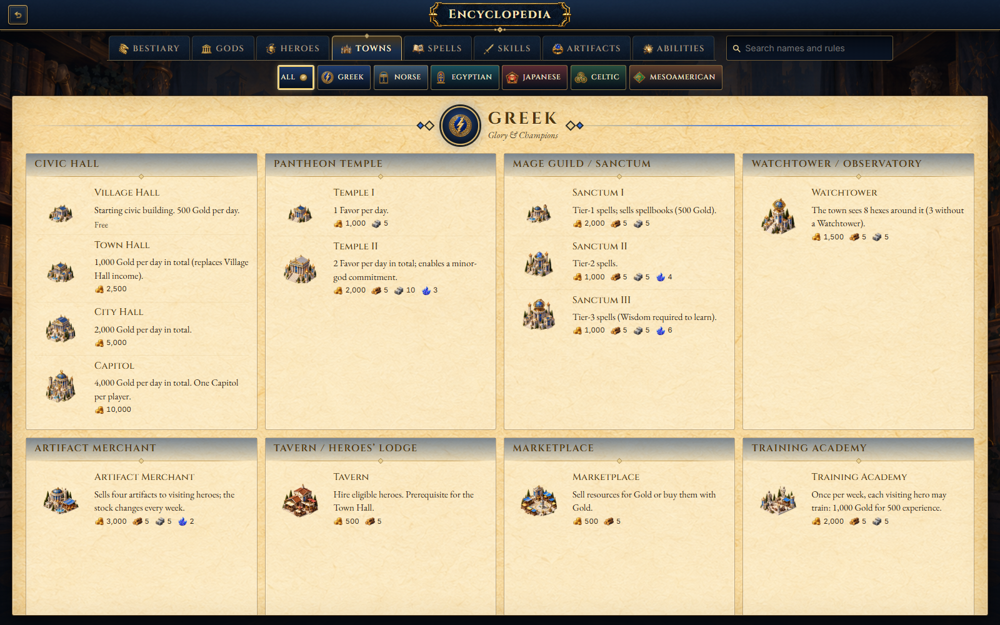
S17-accessibility · Settings Accessibility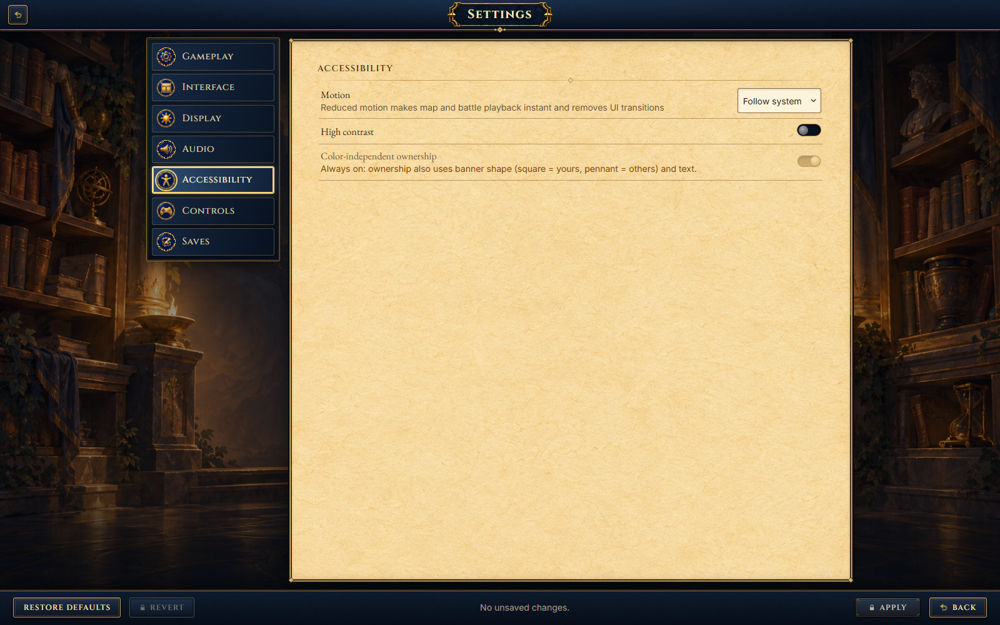
S17-audio · Settings Audio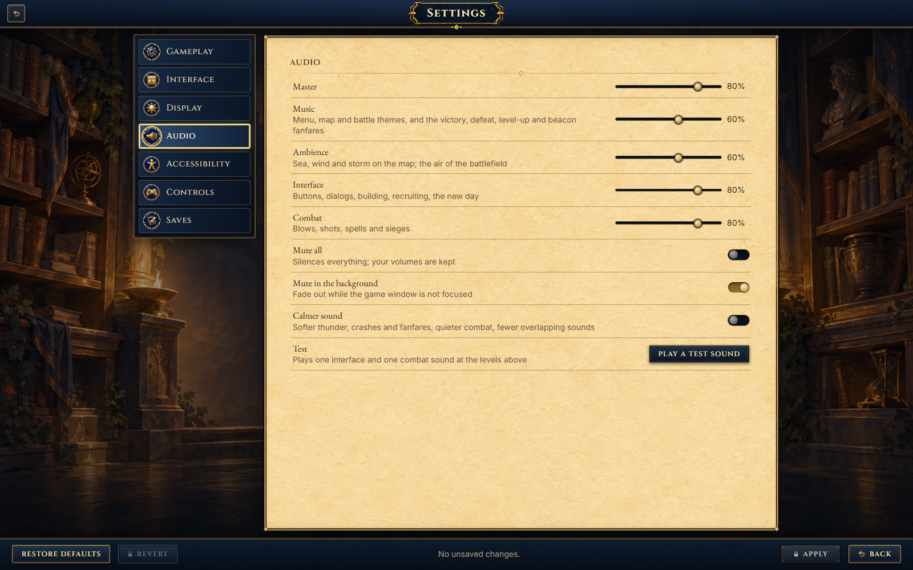
S17-controls · Settings Controls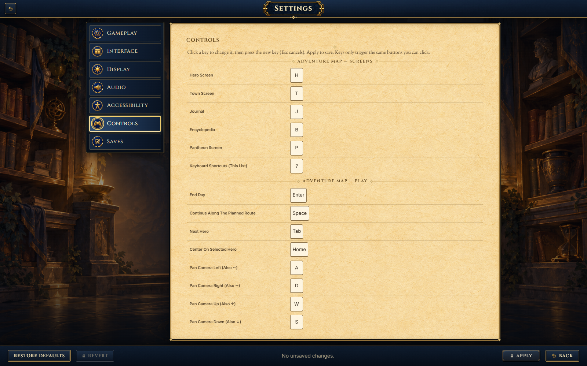
S17-display · Settings Display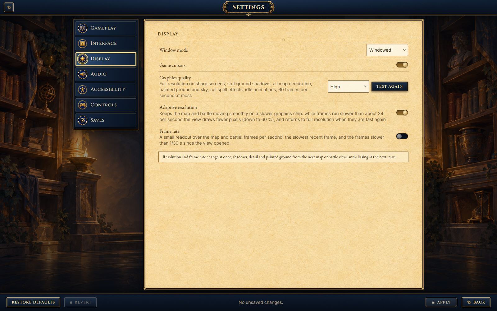
S17-gameplay · Settings Gameplay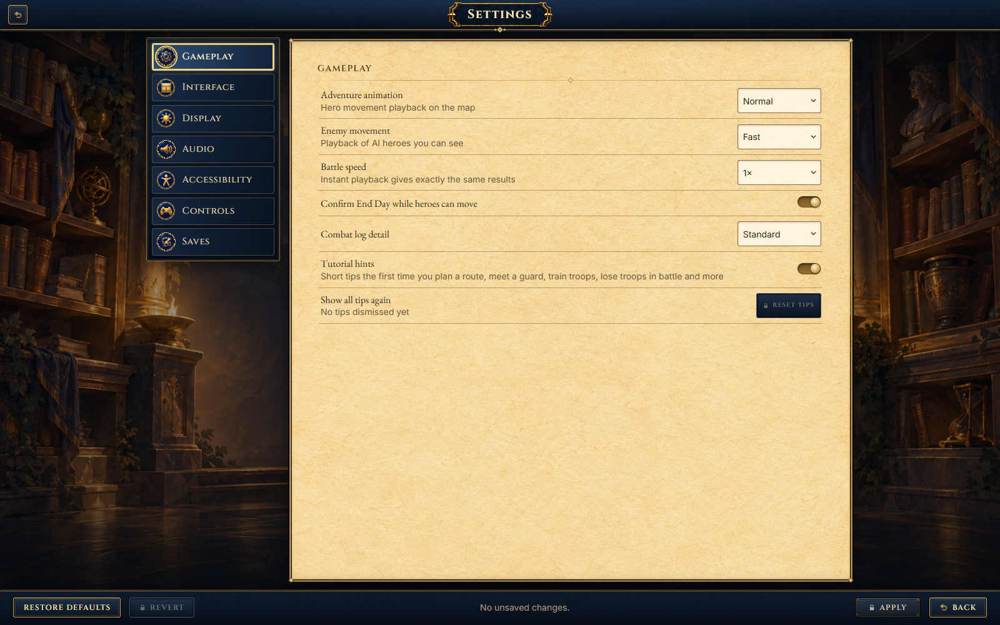
S17-interface · Settings Interface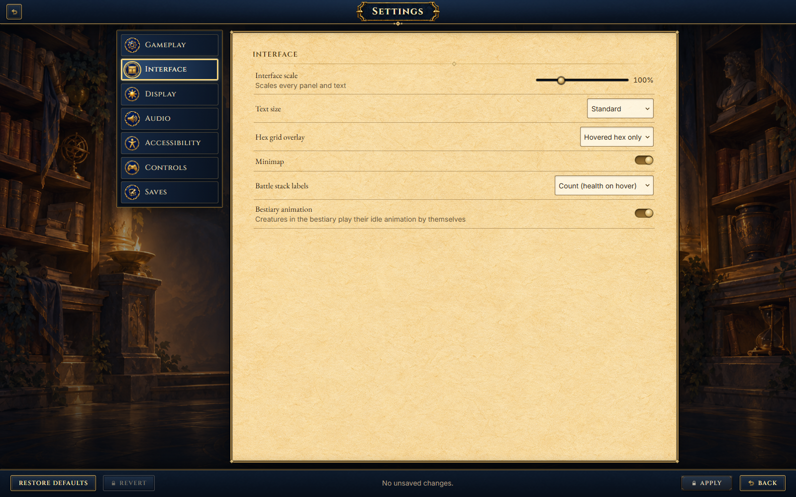